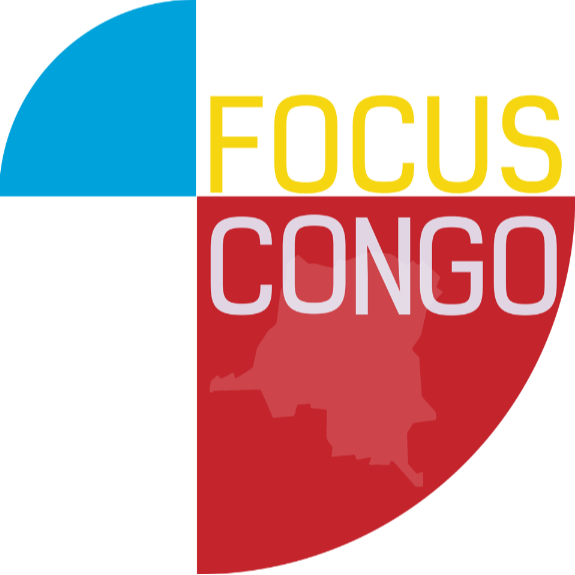
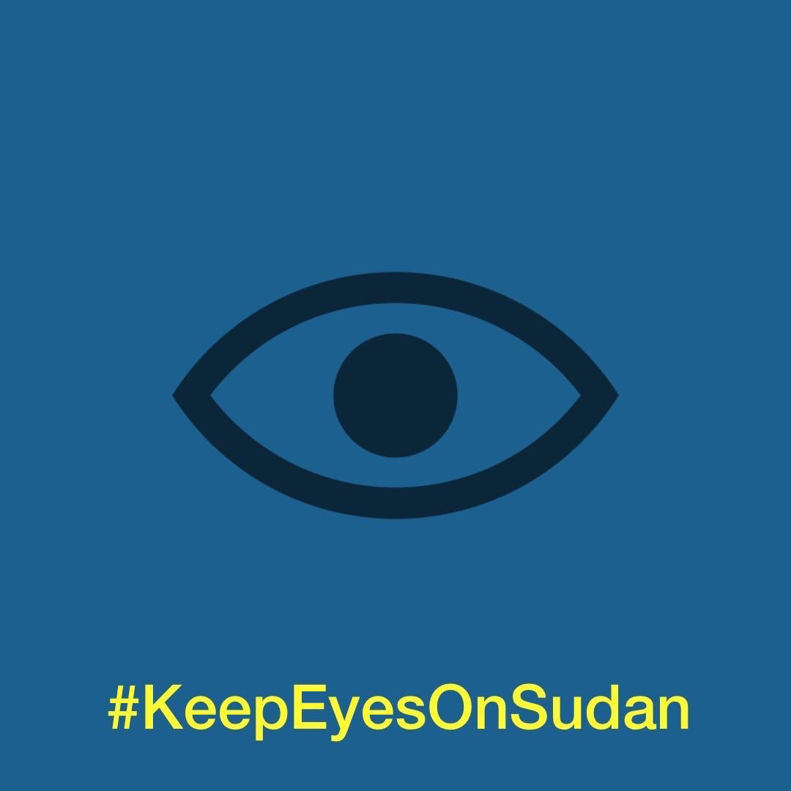

Focus Congo is an organization whose mission is rebuilding the DRC and aiding the displaced Congolese people. The organization is founded by Congolese Activist, Pappy Orion, who was forcefully displaced to South Africa in the early 2000s. In the 2010s returning to DRC to his family and advocating for Congo.

Keep Eyes on Sudan is a organization run by Sudanese people fighting for the human rights of the Sudanese citizens. They encourage activism with Sudan to stop the war that innocent people are caught in the crossfire between.

CARE is an organization dedicated to aiding countries effected by climate change encouraging global change. They work to rebuild communities facing poverty and displacement due to the climate crisis.